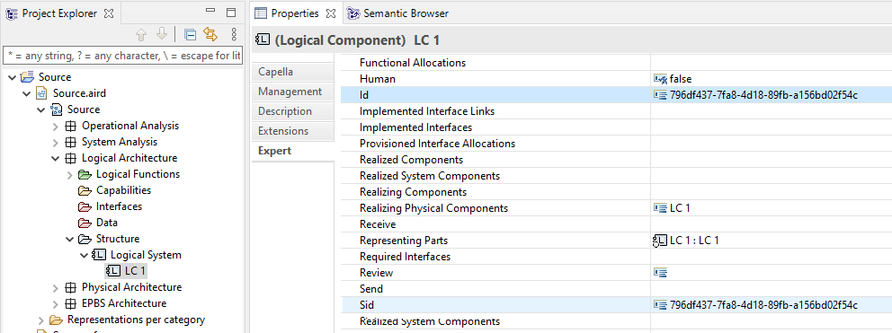
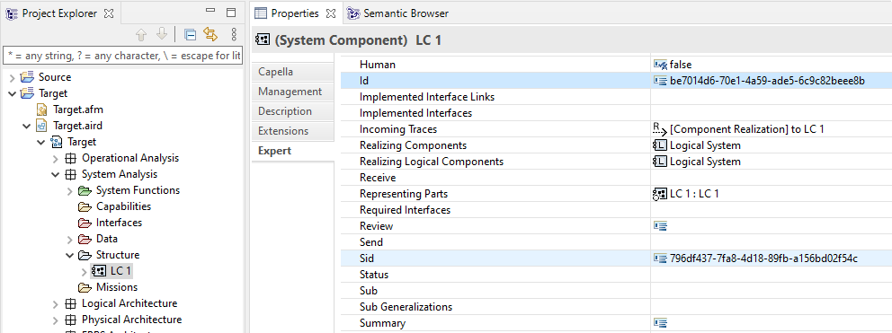

By default, Capella elements don't have any SID. As soon as a transition is performed,

In the above figure, the LogicalComponent1 ID is equal to its SID.
The target element gets a new technical ID, its SID is the one of the source element in the System model.

In the above figure, the LogicalComponent 1 (which is the System element of targetModel) SID is equal to the SID of the LogicalCompenent 1 of sourceModel (System Model).